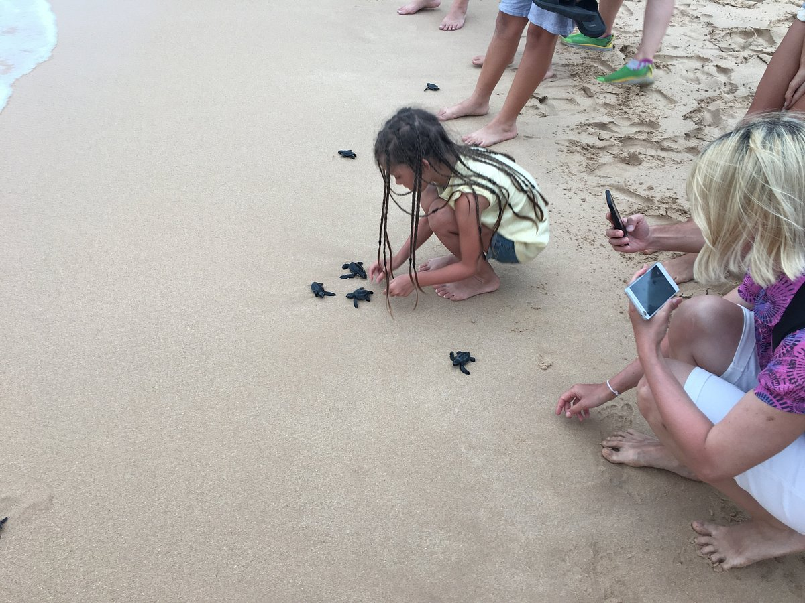
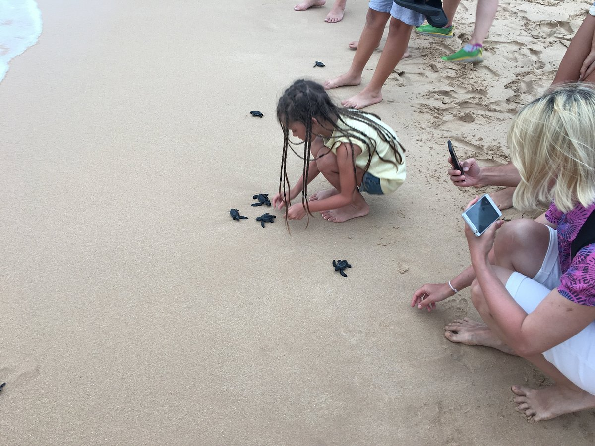

The Hikkaduwa Turtle Hatchery, which is situated in the charming seaside village of Hikkaduwa, is a haven for sea turtles and a beautiful vacation spot for nature lovers. This well-known hatchery is a key player in conservation efforts, working relentlessly to safeguard and restore these extinct animals. Visitors to the hatchery can engage in a variety of activities
Some of these activities include the amazing process of turtle nesting and hatching can be seen. You'll have the chance to see nesting turtles lay their eggs while being accompanied by professional guides, and if you're lucky, you'll get to see the wonderful moment when the tiny hatchlings leave their nests and head for the ocean. It's an amazing experience that makes you wonder about and appreciate nature's beauties.Furthermore the Hikkaduwa Turtle Hatchery provides lessons that offer insightful information on sea turtle preservation. The knowledgeable staff is happy to impart knowledge about the several types of turtles, their life cycles, and the dangers they encounter in the wild. You'll learn more about the difficulties turtles face and how people and communities may support their protection through interesting talks and interactive exhibits.
The Hikkaduwa Turtle Hatchery is not just a haven for turtles, but also a location where guests may take part in actively preserving these amazing animals. A trip to this hatchery ensures that you will leave with knowledge, compassion, and a strong sense of connection to nature, whether you choose to release hatchlings into the ocean or learn about their conservation. It's an opportunity to help a cause bigger than ourselves and have a good influence on sea turtle conservation in the future.


 
